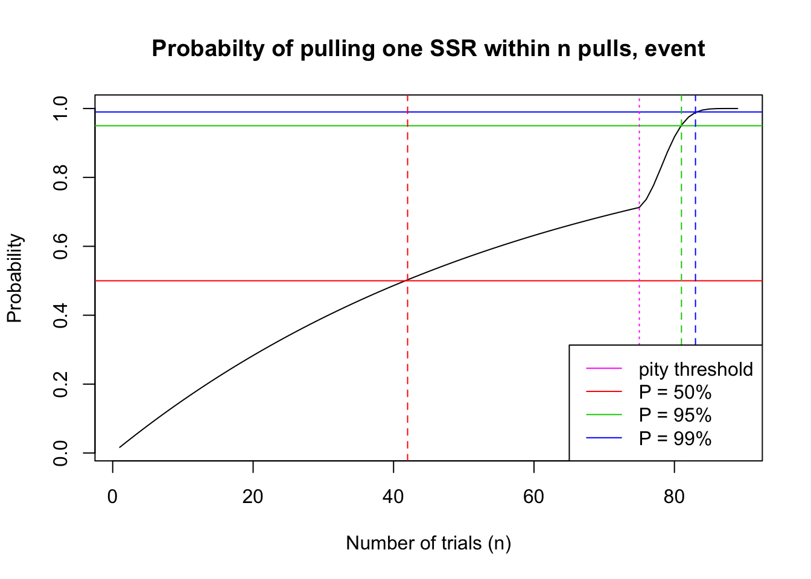

Last updated: 2020-12-20
Checks: 7 0
Knit directory: gacha/
This reproducible R Markdown analysis was created with workflowr (version 1.6.2). The Checks tab describes the reproducibility checks that were applied when the results were created. The Past versions tab lists the development history.
Great! Since the R Markdown file has been committed to the Git repository, you know the exact version of the code that produced these results.
Great job! The global environment was empty. Objects defined in the global environment can affect the analysis in your R Markdown file in unknown ways. For reproduciblity it’s best to always run the code in an empty environment.
The command set.seed(20201216) was run prior to running the code in the R Markdown file. Setting a seed ensures that any results that rely on randomness, e.g. subsampling or permutations, are reproducible.
Great job! Recording the operating system, R version, and package versions is critical for reproducibility.
Nice! There were no cached chunks for this analysis, so you can be confident that you successfully produced the results during this run.
Great job! Using relative paths to the files within your workflowr project makes it easier to run your code on other machines.
Great! You are using Git for version control. Tracking code development and connecting the code version to the results is critical for reproducibility.
The results in this page were generated with repository version a82f053. See the Past versions tab to see a history of the changes made to the R Markdown and HTML files.
Note that you need to be careful to ensure that all relevant files for the analysis have been committed to Git prior to generating the results (you can use wflow_publish or wflow_git_commit). workflowr only checks the R Markdown file, but you know if there are other scripts or data files that it depends on. Below is the status of the Git repository when the results were generated:
Ignored files:
Ignored: .DS_Store
Ignored: .RData
Ignored: .Rhistory
Ignored: gacha/.RData
Ignored: gacha/.Rhistory
Untracked files:
Untracked: analysis/shiny.Rmd
Unstaged changes:
Modified: code/wflow_init.R
Note that any generated files, e.g. HTML, png, CSS, etc., are not included in this status report because it is ok for generated content to have uncommitted changes.
These are the previous versions of the repository in which changes were made to the R Markdown (analysis/genshin.Rmd) and HTML (docs/genshin.html) files. If you’ve configured a remote Git repository (see ?wflow_git_remote), click on the hyperlinks in the table below to view the files as they were in that past version.
| File | Version | Author | Date | Message |
|---|---|---|---|---|
| Rmd | a82f053 | Lijia Wang | 2020-12-20 | finished Genshin Case Study |
| html | 52a5ece | Lijia Wang | 2020-12-19 | Build site. |
| Rmd | b0b051c | Lijia Wang | 2020-12-19 | added content |
Now that the Zhongli banner is almost over, I’m sure a lot of you are saving up those precious primogems for our next white (silver?) haired twink Albedo. In this investigation we look for the number of pulls needed to achieve 95% probability of pulling one SSR character using the Genshin Impact.
I would like to state that we are very unsure about how the Genshin Impact (referred to as “Genshin”) algorithm actually works. Unlike Arknights, the gacha statistics given in the game offers very little insights on when the pity mechanism kicks in, and the size of the increment in probability. However, an empirical study on reddit has stated that the pity mechanism is likely to take effect at the 76th pull, and the SSR rate increases to 100% at the 90th pull (as described in gacha rules). We will assume that this scenario is true in our calculations.
Genshin Impact also includes the 10-pull bonus in their gacha mechanism. Similar to our prior analyses, we assume that the 10-pull bonus affects both 4-star (SR) items and 5-star (SSR) items.
The Genshin gacha rules state that player is “guaranteed to win a 4-star or above item at least once per 10 attempts”, and “guaranteed to win 5-star character at least once per 90 attempts.” Both conditions apply to both event and non-event gacha pools. I’m honestly not sure what their stated “consolidated probabilities” entail, so that statistic is not used in our calculations.
base probability of 5-star item: 0.600%
base probability of 5-star character (\(p_c\)): 0.300%
base probability of 5-star weapon/equipment (\(p_e\)): 0.300%
base probability of 4-star item (\(q\)): 5.100%
bonus multiplier: \(b = \frac{100}{0.600 + 5.100}= 17.544\)
Note: data gathered from Zhongli banner. No 5-star weapons were in the event gacha.
base probability of 5-star item: 0.600%
base probability of 5-star character (\(p_c\)): 0.600%
base probability of 5-star weapon/equipment (\(p_e\)): 0%
base probability of 4-star item (\(q\)): 5.100%
bonus multiplier: \(b = \frac{100}{0.600 + 5.100}= 17.544\)
For each 10-pull:
\[Pr(X\geq1) = 1-(1-p_c)^9 (bq + bp_e) = 1-(1-0.003)^9(17.544*0.051+17.544*0.003) = 0.0779 \]
As a quick comparison, the probability of obtaining one or more SSR character for 10 single pulls are:
\[Pr(X\geq1) = 1- Pr(X=0) = 1-e^{-np} = 1-e^{-10*0.003} = 1-0.9704 = 0.0296\]
Even though the 10-pull bonus increased the probability of pulling one or more SSR character within 10 pulls, we see that due to the significantly decreased base probabilities, the 10-pull probability is significantly smaller than the F/GO bonus probabilities (0.132).
If the Genshin pity probability increases linearly by each pull, like the mechanism employed by Arknights, then we would like to find a base probability that factors in the 10-pull bonus, and increase the probability from there. We also need to calculate the pity increments, since pity increments is independent of the bonus probabilities.
pity increments:
\[ \delta = \frac{1-p_c}{90-N}=\frac{1-0.003}{90-75} = 0.0665\]
bonus probabilities:
(This might be cheating, but) I will calculate the single pull probabilities with bonus (\(p\)) using the 10-pull probability with bonus.
Remember, the probability of obtaining one or more SSR character for 10 single pulls are:
\[Pr(X\geq1) = 1- Pr(X=0) = 1-e^{-np} = 1-e^{-10*0.003} = 1-0.9704 = 0.0296\]
\[ Pr(X\geq1) = 1-e^{-10p} = 0.0779\]
\[ p = \frac{log(1- 0.0779)}{-10} = 0.00811 \]
And the rest of the calculation is easy – we will simply substitute the new probability with bonus into our pity model:
Probability of first succcess:
\[Pr(X = k) = p_k\Pi_{i=0}^{k-1}q_i = (p+k\delta)\Pi_{i=0}^{k-1}q_i\]
The cumulative probability can be calculated as:
\[Pr(X \leq k) = 1-\Pi_{i=1}^{k}q_i\]
In this case, \(p = 0.00811\), and \(\delta = 0.0665\)
# Genshin non-event parameters
base.p = 0.00811
incr = 0.0665
N = 75 # pulls before pity starts
pi = c(rep(base.p, N-1), seq(base.p, to = 1, by = incr))
i = length(pi)
fi = rep(1-base.p, i)
for(ind in 2:i){
fi[ind] = (1-pi[ind])*fi[ind-1]
}
plot(seq(1,i), 1 - fi, type = 'l',
main = "Probabilty of pulling one SSR within n pulls, non-event",
xlab = "Number of trials (n)", ylab = "Probability")
abline(h = 0.50, col = 2)
abline(h = 0.95, col = 3)
abline(h = 0.99, col = 4)
p50 = which.min(abs((1-fi)-0.5))
p95 = which.min(abs((1-fi)-0.95))
p99 = which.min(abs((1-fi)-0.99))
abline(v = p50, col = 2, lty = 2)
abline(v = p95, col = 3, lty = 2)
abline(v = p99, col = 4, lty = 2)
abline(v = N, col = 6, lty = 3)
legend('bottomright', legend=c('pity threshold', 'P = 50%', 'P = 95%', 'P = 99%'),
col = c(6, 2, 3, 4), lty = 1)(paste("Player has 50% probability to pull their first SSR within", p50, "pulls."))[1] "Player has 50% probability to pull their first SSR within 76 pulls."(paste("Player has 95% probability to pull their first SSR within", p95, "pulls."))[1] "Player has 95% probability to pull their first SSR within 82 pulls."(paste("Player has 99% probability to pull their first SSR within", p99, "pulls."))[1] "Player has 99% probability to pull their first SSR within 84 pulls."We basically repeat all calculations from the previous part
For each 10-pull, the probability of pulling one or more SSR characters is:
\[Pr(X\geq1) = 1-(1-p_c)^9 (bq + bp_e) = 1-(1-0.006)^9(17.544*0.051) = 0.152 \]
As a quick comparison, the probability of obtaining one or more SSR character for 10 single pulls are:
\[Pr(X\geq1) = 1- Pr(X=0) = 1-e^{-np} = 1-e^{-10*0.006} = 1-0.9418 = 0.0582\]
pity increments:
\[ \delta = \frac{1-p_c}{90-N}=\frac{1-0.006}{90-75} = 0.0663\]
bonus probabilities:
Once again, I will calculate the single pull probabilities with bonus (\(p\)) using the 10-pull probability with bonus.
The probability of obtaining one or more SSR character for 10 single pulls are:
\[Pr(X\geq1) = 1- Pr(X=0) = 1-e^{-np} = 1-e^{-10*0.006} = 1-0.9418 = 0.0582\]
\[ Pr(X\geq1) = 1-e^{-10p} = 0.152\]
\[ p = \frac{log(1- 0.152)}{-10} = 0.0165\]
Substitute the new probability with bonus into our pity model:
Probability of first succcess:
\[Pr(X = k) = p_k\Pi_{i=0}^{k-1}q_i = (p+k\delta)\Pi_{i=0}^{k-1}q_i\]
The cumulative probability can be calculated as:
\[Pr(X \leq k) = 1-\Pi_{i=1}^{k}q_i\]
In this case, \(p = 0.0165\), and \(\delta = 0.0663\)
# Genshin event parameters
base.p = 0.0165
incr = 0.0663
N = 75 # pulls before pity starts
pi = c(rep(base.p, N-1), seq(base.p, to = 1, by = incr))
i = length(pi)
fi = rep(1-base.p, i)
for(ind in 2:i){
fi[ind] = (1-pi[ind])*fi[ind-1]
}
plot(seq(1,i), 1 - fi, type = 'l',
main = "Probabilty of pulling one SSR within n pulls, event",
xlab = "Number of trials (n)", ylab = "Probability")
abline(h = 0.50, col = 2)
abline(h = 0.95, col = 3)
abline(h = 0.99, col = 4)
p50 = which.min(abs((1-fi)-0.5))
p95 = which.min(abs((1-fi)-0.95))
p99 = which.min(abs((1-fi)-0.99))
abline(v = p50, col = 2, lty = 2)
abline(v = p95, col = 3, lty = 2)
abline(v = p99, col = 4, lty = 2)
abline(v = N, col = 6, lty = 3)
legend('bottomright', legend=c('pity threshold', 'P = 50%', 'P = 95%', 'P = 99%'),
col = c(6, 2, 3, 4), lty = 1)
(paste("Player has 50% probability to pull their first SSR within", p50, "pulls."))[1] "Player has 50% probability to pull their first SSR within 42 pulls."(paste("Player has 95% probability to pull their first SSR within", p95, "pulls."))[1] "Player has 95% probability to pull their first SSR within 81 pulls."(paste("Player has 99% probability to pull their first SSR within", p99, "pulls."))[1] "Player has 99% probability to pull their first SSR within 83 pulls."We can see that the event probabilities decrease the number of pulls required to hit 50% probability of obtaining 1 SSR character, but has very little effect on the number of pulls required to hit 95% and 99% probability. This is unsurprising because we can easily observe that the 10-pull bonus offers a very small increment on the per-pull probability, and this increment is overpowered by the pity mechanism once that kicks in.
One additional note is that when compared to the observations in the reddit empirical study, we can see that our probability model agrees with their observation that there should be very few instances where more than 84 pulls are needed to pull one SSR character.
sessionInfo()R version 3.6.2 (2019-12-12)
Platform: x86_64-apple-darwin15.6.0 (64-bit)
Running under: macOS 10.16
Matrix products: default
BLAS: /Library/Frameworks/R.framework/Versions/3.6/Resources/lib/libRblas.0.dylib
LAPACK: /Library/Frameworks/R.framework/Versions/3.6/Resources/lib/libRlapack.dylib
locale:
[1] en_US.UTF-8/en_US.UTF-8/en_US.UTF-8/C/en_US.UTF-8/en_US.UTF-8
attached base packages:
[1] stats graphics grDevices utils datasets methods base
other attached packages:
[1] workflowr_1.6.2
loaded via a namespace (and not attached):
[1] Rcpp_1.0.3 rprojroot_1.3-2 digest_0.6.25 later_1.0.0
[5] R6_2.4.1 backports_1.1.5 git2r_0.26.1 magrittr_1.5
[9] evaluate_0.14 stringi_1.4.6 rlang_0.4.5 fs_1.3.2
[13] promises_1.1.0 whisker_0.4 rmarkdown_2.1 tools_3.6.2
[17] stringr_1.4.0 glue_1.3.2 httpuv_1.5.2 xfun_0.12
[21] yaml_2.2.1 compiler_3.6.2 htmltools_0.4.0 knitr_1.28